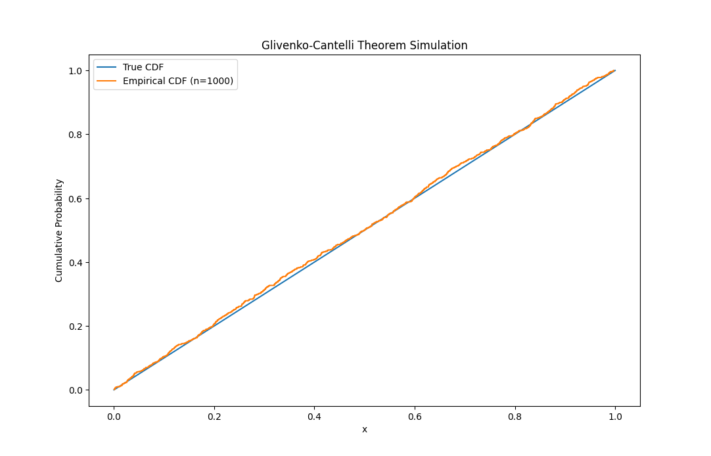

The Glivenko–Cantelli theorem, sometimes referred to as the Fundamental Theorem of Statistics, is a key concept in probability theory. Named after Valery Ivanovich Glivenko and Francesco Paolo Cantelli, it determines the asymptotic behavior of the empirical distribution function as the number of independent and identically distributed observations grows.
The theorem states that if you have a sequence of independent and identically distributed random variables with a common cumulative distribution function, the empirical distribution function for this sequence converges almost surely to the actual distribution function.
In other words, the difference between the empirical cumulative distribution function and the actual cumulative distribution function goes to zero almost surely.
Here’s a more formal statement of the theorem:
Let \(X_1, X_2, ..., X_n\) be independent and identically distributed random variables with a common cumulative distribution function \(F\). The empirical distribution function \(F_n\) for these variables is defined by:
\[F_n(x)=\frac{1}{n}\sum_{i=1}^{n}I(X_i \leq x)\]
where \(I\) is the indicator function of the set \(\{ X_i \leq x \}\). For every fixed \(x\), \(F_n(x)\) is a sequence of random variables which converge to \(F(x)\) almost surely.
The Glivenko and Cantelli strengthened this result by proving uniform convergence of \(F_n\) to \(F\), i.e.,
\[\sup_{x \in \mathbb{R}}\vert F_n(x) - F(x) \vert \to 0\]
almost surely.
In simpler terms, the theorem states that as the sample size nn increases, the empirical distribution function becomes a better and better approximation of the true distribution function, and this convergence happens almost surely for all possible values of xx. The uniform convergence implies that the approximation is good across the entire range of the distribution.
The Glivenko-Cantelli theorem has important implications for the field of statistics, particularly in understanding the behavior of sample-based estimators and the convergence of sample statistics to their population counterparts. It provides a theoretical foundation for using empirical distribution functions as estimators of the true underlying distribution in statistical inference. The theorem also plays a key role in establishing the consistency of certain statistical procedures, contributing to the theoretical underpinning of statistical inference.

The figure shows a simulation in which random samples from a uniform distribution are generated, the empirical cumulative distribution function (ECDF) is calculated, and both the true cumulative distribution function (CDF) and the empirical CDF are plotted.